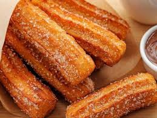
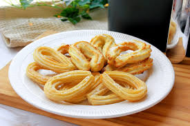
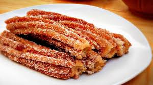

Churros



Los churros, es una receta de origen europeo que llego a Venezuela para quedarse.
Es un tubito de masa con surcos alrededor, que se come preferiblemente caliente bañado de azúcar,
azúcar con canela, dulce de leche o chocolate.
Los churros son muy ricos acompañados con un vaso de chocolate caliente, son de fácil elaboración
INGREDIENTES
Fácil de hacer
- 2 tazas de agua
- 2 tazas harina de trigo
- 2 cucharada mantequilla o aceite
- 1 huevo opcional
- 1/2 cucharadita de sal
- Azúcar
- Canela opcional
- Aceite para freir
Pasos
- En una olla llevar a ebullición el agua, el azúcar, la sal y el aceite vegetal. Luego reducir a fuego bajo.
- Agregar la harina de una sola vez y revolver vigorosamente con una cuchara de madera, agregue el huevo, contiue mezclando
hasta que la mezcla forme una masa suave que se desprenda de los lados de la olla.
- Deje reposar la mezcla, esto evitará que exploten cuando los fria
- Repita el paso anterior, hasta que no le quede líquido en su mesa, !amase con amor¡
- Coloque la mezcla en un manga pastelera con una boquilla
- Calentar a fuego medio suficiente aceite en una sartén u olla profunda. El aceite debe estar bien caliente sin llegar a quemarse.
- Exprimir la masa directamente en el aceite caliente, cortando
tiras alargadas con unas tijeras, también puedes hacer todos los churros y luego;
- Freír hasta que estén dorados y crujientes
- Retirar del aceite y colocar sobre papel absorbente para eliminar el exceso de grasa.
Espolvorear con una mezcla de azúcar y canela mientras aún estén calientes.